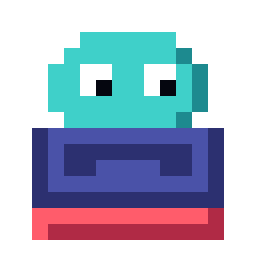

NovedadesLo que ha cambiado en cada versión, de la más reciente a la más antigua.
0.42.10 2026-11-10
- Tutorial más visual: en los pasos de mover, soltar y girar sale sobre el tablero la tecla en grande (o el gesto animado en táctil). «Salir» pasa a «Saltar» y empieza una partida en vez de volver a la portada. Tras el tutorial, «Jugar partida» ya no repite el tutorial en la primera visita.
0.42.9 2026-11-10
- Pulido para CrazyGames. El escenario horizontal llena el iframe 16:9 (sin franjas a los lados) y quita el hueco vacío sobre el tablero: todo sale un 20 % más grande a 907×510. Textos pequeños del HUD agrandados. La portada de portal cabe sin desplazar en 800×450 y enseña los controles. Las cartas de mejora caben con el consejo del tutorial (antes se salía por abajo). En móvil horizontal el consejo del tutorial va dentro del escenario y no tapa el marcador; en vertical los contadores ya no quedan tapados. La barra del jefe va sobre el tablero cuando cabe; si no, dentro y en una sola línea fina. Al cambiar el tamaño de la ventana el lienzo se rehace una vez, al soltar. CrazyGames sigue el idioma de su SDK. «Hiper» de la racha se traduce.
0.42.8 2026-11-09
- Portal: los builds de portal ya no tienen botón de compartir (el texto llevaba un enlace a pilecrawl.fun). «Compartir resultado», «Copiado» y «No se pudo compartir» pasan por el sistema de idiomas y se ven en inglés. Los ZIP de itch, Poki y CrazyGames se crean desde cero, sin restos de builds anteriores.
0.42.7 2026-11-09
- Portal: en CrazyGames un móvil con la pantalla de pie vuelve a usar la vista vertical (#109 la había desactivado en todos los builds de portal). La horizontal forzada se queda solo en Poki. Sin portal no cambia nada.
0.42.6 2026-11-09
- Builds de CrazyGames y Poki: el idioma por defecto es el inglés aunque el navegador esté en español (los portales lo piden). Se cambia en Ajustes. En pilecrawl.fun no cambia nada.
0.42.5 2026-11-09
- Builds de portal (CrazyGames y Poki): el juego siempre usa el escenario horizontal y se encaja con franjas en el iframe, en vez de pasar a vertical en móvil. Sin portal no cambia nada.
0.42.4 2026-10-30
- Adaptador de Poki:
npm run build:pokigenera el ZIP con el SDK de Poki (carga, inicio y parada de juego,commercialBreakentre partidas con el sonido callado). Portada de un clic como en CrazyGames. Sin portal no cambia nada.
0.42.3 2026-10-30
- Anuncios de portal entre partidas: con
VITE_PORTAL_ADS=1el build de CrazyGames pide un anuncio al pasar de una partida acabada a la siguiente (nunca en el tutorial), calla el sonido mientras dura y no deja esperando si falla o no responde en 90 s. Sin esa variable no cambia nada.
0.42.2 2026-10-30
- Guardado de portal: en el build de CrazyGames, ajustes, récords, Expedición y partida guardada pasan por el módulo de datos del SDK (la cuenta del jugador), sin tocar el resto del código. Fuera de un portal no cambia nada.
0.42.1 2026-10-30
- Inglés: texto de compartir resultado, avisos de partida guardada, publicar puntuación y apodo, y el título de fin de partida (el efecto de brillo seguía en español). La tabla de rankings queda para otro PR.
- Tutorial en móvil vertical: el paso de la Racha es más corto, así que el consejo ya no tapa la reserva. Solo texto.
0.42.0 2026-10-30
- Expedición con curva propia. Hasta el nivel 10 la velocidad es la del arcade; después sube un paso cada 6 niveles, así que el Monolito llega a 69 ms por fila (no a 40), y cada nivel pide como mucho 8 líneas: unas 200 líneas en total, no 300. Imán nunca cae sobre un hueco de basura ni deja huecos en su columna prohibida: antes había filas que no se podían cerrar. Solo cambia la Expedición; el arcade sigue igual.
0.41.4 2026-10-30
- Modo portal: en los builds de portal (
VITE_PORTAL) la portada es de un clic (Jugar, Expedición, Tutorial, Catálogo y Ajustes, sin selector de modos ni paneles), todos usan rutas relativas y nuevonpm run build:crazygames. En pilecrawl.fun no cambia nada.
0.41.3 2026-10-30
- Inglés casi completo: nombres y textos de mejoras, maldiciones, hiperperks y jefes, catálogo, Expedición, tutorial, ajustes, nombres de teclas y los textos que salen sobre el tablero. Un test comprueba que las cifras del inglés coinciden con las del español. Pendiente: ranking, mensajes de partida guardada y el laboratorio.
0.41.2 2026-10-30
- El build para CrazyGames no muestra el botón de pantalla completa propio, que el portal prohíbe. Fuera de ese build no cambia nada.
0.41.1 2026-10-30
- Versión para itch.io (
npm run build:itch): rutas relativas, sin enlaces a otras webs y con botón de pantalla completa en la portada. Fuera de ese build no cambia nada.
0.41.0 2026-10-30
- Cambia las reglas (
RULES_VERSION17): el ranking empieza de cero. Las doce cartas que no tenían contrapartida ya tienen una, suave: Visión (las piezas se fijan 30 ms antes), Dados (cada cambio de cartas quita 2 de racha), Dique (pierdes un cambio de cartas), Cosecha (cada cambio de cartas acerca la basura), Bomba (cada bomba acerca la basura), Cadena (las piezas se fijan 20 ms antes), Fuego cruzado (guardar una pieza cuesta 10 puntos por nivel), Experiencia (la basura sube antes), Dominó (ves una pieza menos), Barra corta (la basura sube antes), Taladro (una carta menos para elegir) y Trébol (una línea más para subir de nivel por cada copia). En la Expedición, Trébol, Bomba y Dique no tienen contrapartida. El reto de nivel 6 abre Dobles reserva y Eco está abierta desde el principio.
0.40.2 2026-10-29
- Inglés en el catálogo y en la cabecera de Expedición (títulos, cifras y botón). El cuerpo del catálogo, la presión, las mejoras permanentes y los nombres de las mejoras siguen en español por ahora.
0.40.1 2026-10-29
- Inglés en la pantalla de partida: marcador, mejoras, racha, hiperperk, elección de cartas, pausa y fin de partida se ven en inglés (con el idioma del navegador o el que elijas en Ajustes). Pendiente: nombres y textos de las mejoras, catálogo, Expedición, tutorial y el resto de ajustes.
0.40.0 2026-10-29
- Expedición: victorias con premio y pantalla propia. Vencer al Monolito da 150 fragmentos extra y se cuenta en la pantalla de la Expedición. Ganar abre la Presión siguiente (antes se abría al llegar al nivel 6). La victoria tiene su pantalla dorada, distinta de la derrota. Dos mejoras nuevas: Suerte (más mejoras raras y épicas) y Reserva extra (una pieza más en la reserva). Las Presiones ganadas antes no se conservan: se gana otra vez. Suerte tiene un solo nivel (120 fragmentos) y Bolsillo doble suma a la reserva en vez de fijarla.
- En móvil vertical, las mejoras se ven bajo el tablero en una franja (tocarla abre la pausa). Pausa en móvil: los controles son gestos (arrastrar, tocar, tirón, deslizar) en vez de teclas, los botones de la pausa tienen margen en el borde, y en táctil se quitan las pistas de tecla de cartas, fin de partida y portada. Solo presentación.
- Copy de las mejoras: «Cada bolsa» pasa a «Cada tanda» (las piezas de cada tanda se siguen sacando igual). Solo texto.
- Expedición: se juega por sus propias reglas. Los perks de puntos (Codicia, Cadena, Fuego cruzado, Vértigo, Reflejos…) ya no salen en la Expedición: allí los puntos no valen nada. Los retos abren perks que sí salen (Cruz pasa a Erosión, Maestro del giro a Experiencia, Combo eterno a Tahúr, Interés compuesto a Eco). Expedición lleva su propio mejor nivel, que decide las rarezas de sus ofertas, y la pantalla de fin muestra ese récord y no el del arcade.
- Pilecrawl en inglés: la portada, el selector de modos, los paneles y el pie se traducen. Se elige en Ajustes → Idioma (por defecto, el del navegador). El resto del juego sigue en español por ahora. Además, adaptador del SDK de CrazyGames que solo se activa en el build de portal (
VITE_PORTAL=crazygames); en pilecrawl.fun no cambia nada. En Expedición, el aviso «Desbloqueado» ya no anuncia rarezas que esa modalidad no desbloquea.
0.39.0 2026-10-29
- Expedición tiene ya los ocho jefes: Niebla (una sola pieza visible y sin fantasma), Espejo (los movimientos a izquierda y derecha se invierten en las 5 primeras piezas de cada 10), Alud (cada 4 piezas se desprende la fila más alta, sin puntos), Cuenta atrás (una fila de basura cada 10 segundos de juego) y el Monolito en el nivel 24, que mezcla dos reglas de las anteriores según la semilla. Vencer al Monolito da la victoria** (pantalla «VICTORIA»). Partida y el diario siguen sin jefes y sin cambios de reglas.
0.38.0 2026-10-29
- En móvil vertical, el tutorial ya no tapa el marcador, la reserva ni la cola: durante el tutorial se ocultan puntos y nivel y el consejo se ciñe arriba.
- Expedición: Presión. Antes de jugar puedes activar hasta 4 condiciones que endurecen la partida (basura desde el nivel 2, sin reserva, dos cartas por subida y cola de una pieza). Cada una vale 1 punto y suma un 25 % a los fragmentos. Para tener la Presión N hace falta llegar al nivel 6 con la N-1. Solo Expedición; el resultado sale en la pantalla de fin de partida.
- [interno] Código:
game.tsdeja de declarar tipos y constantes, que pasan atypes.tsyconstants.ts(sin cambio de reglas ni de comportamiento).
0.37.3 2026-10-29
- Portada y Expedición sin textos de relleno: «Arcade» pasa a «Modos», «Catálogo» en una línea, «Contacto» pasa a «Acerca de», el ranking mundial dice que aún no está activo y la nota de beta de Expedición se entiende. Las etiquetas Beta y Nuevo se leen mejor.
0.37.2 2026-10-26
- «Reportar un bug» vuelve a abrir el formulario de GitHub (el repositorio es público otra vez).
0.37.1 2026-10-26
- «Reportar un bug» se envía por correo (el repositorio ya es privado).
0.37.0 2026-10-26
- Cambia las reglas (
RULES_VERSION16): reinicia los marcadores. Los jefes (Gota, Gravedad, Imán) salen solo en Expedición. Partida y desafío diario vuelven a no tener jefes.
0.36.1 2026-10-26
- Los jefes se presentan: al empezar el nivel jefe sale un cartel breve (2,8 s) en la parte de arriba del tablero con su nombre, la regla y cuántas líneas hay que hacer; mientras dura, una barra de vida sobre el tablero baja con las líneas que faltan (con la regla resumida), y al vencerlo sale un cartel con la recompensa. Solo presentación: no cambia reglas.
0.36.0 2026-10-25
- Cambia las reglas (
RULES_VERSION15): el ranking empieza de cero. La partida se divide en tramos de 3 niveles y el último de cada tramo es un jefe con una regla rara durante todo el nivel (en Partida y en el desafío diario; no en contrarreloj, tutorial ni Expedición): Gota (cada 6 piezas cae un bloque suelto de basura), Gravedad (caída al doble, pero las limpiezas de 2 o más líneas cuentan doble) e Imán (una columna prohibida que cuenta como llena, salvo en filas de basura, y cambia cada 8 piezas). Los jefes rotan en ese orden. Al superar uno ganas un reroll y sale una oferta de cartas épicas o mejores, sin maldiciones. El nivel muestra el tramo y el jefe, con un cartel al empezar. Propuesta completa (8 jefes, final de partida y victoria, en próximos PR) enplanes/jefes-y-tramos.md.
0.35.3 2026-10-25
- Quita la onda que salía al soltar una pieza con espacio, también en caídas largas. El resto de efectos no cambia.
0.35.2 2026-10-25
- Sonido con más peso: limpiar líneas suena más fuerte cuanta más cantidad (de 1 a 4), subir de tramo de racha tiene un arpegio que crece, la subida de nivel abre con un golpe grave, la hiperperk activada barre el sonido y cada carta de la oferta da un tic al destapar. Solo sonido: no cambia reglas.
0.35.1 2026-10-25
- Retoques: al subir de nivel las cartas se destapan en 0,3 s cada una (antes 0,9 s) y un clic o una tecla las muestra todas sin elegir. La onda al soltar una pieza solo sale en caídas muy largas. El menú de pausa tiene botones para la música y el sonido.
0.35.0 2026-10-23
- Efectos de pantalla por legendaria, solo cosméticos (no cambian reglas): Eco deja postimágenes de cada pieza, Terremoto ondula la imagen, Prisma y las subidas de nivel lanzan un barrido arcoíris, Fénix y Segunda vida estallan de color al revivir, Casino brilla en cada oferta y, con una vida de reserva y la pila alta, el borde late. Con Furia y racha alta el calor ondula los márgenes y con Fénix, a ratos y solo con la pila baja, las tres filas de abajo (muy leve; no se aplica con efectos apagados ni con movimiento reducido). Cada caída directa larga lanza una onda corta.
0.34.0 2026-10-23
- El panel de Mejoras pasa de iconos a una lista con nombre, nivel (veces cogida) y color de rareza; el detalle sale al pasar el ratón. Además, racha e hiperperk bajan a una columna a la derecha de la cola, para que una cola larga no las pise, y el panel de Nivel se estrecha para no chocar con la reserva doble. La habilidad activa va en esa misma columna, bajo la hiperperk.
0.33.0 2026-10-23
- Cambia las reglas (
RULES_VERSION14): el ranking empieza de cero. Cuatro perks nuevos: dos habilidades que se usan con la tecla Q (o tocando su panel en móvil), una vez por nivel y solo una por partida, Pausa táctica (común: congela la caída 3 s, sin girar) y Comodín (rara: descartas la pieza actual, −25 de racha); Erosión (épica: al limpiar líneas desaparece también el bloque más alto, +1 línea por nivel) y Tahúr (épica: una carta extra en cada subida de nivel, +3 líneas por nivel). En la pantalla de cartas, Saltar (tecla K) no coge carta y da un reroll (no vale en ofertas malditas ni de hiperperk), y se puede quitar una maldición por un reroll.
0.32.0 2026-10-23
- La interfaz de la partida se reordena y la racha se hace visible. Todo queda alineado con el tablero: a la izquierda marcador, nivel, contadores y mejoras; a la derecha la cola, la hiperperk y la racha. La lista de teclas pasa a la pausa y desaparece el contador de líneas (ya está en el nivel). La racha tiene cuatro tramos (buena, gran, ardiente, imparable) con nombre y color, cuenta las limpiezas seguidas, saca un texto pequeño sobre el tablero y el marco se enciende, con aura y brasas, cuanto más sube. No cambia reglas.
0.31.0 2026-10-23
- El fondo cobra vida: las estrellas titilan (aparecen en sitios al azar y se apagan y encienden poco a poco) y las colinas de píxeles del pie se desplazan despacio de un lado a otro. Con los efectos apagados o con «reducir movimiento» quedan quietas. Solo cambia el aspecto.
0.30.0 2026-10-22
- Cambia las reglas (
RULES_VERSION13): el ranking empieza de cero. Salen Pluma, Pulso firme (se funden en Pulso tranquilo: +100 ms de fijado y caída un 6% más lenta), Ahorro y Esquina. Atajo ya no es solo «2 líneas menos»: su primera línea de cada nivel cuenta ×3, y cada subida de nivel acerca 3 piezas la basura. Cinco maldiciones nuevas que cambian cómo se juega: Cola ciega (solo ves la siguiente pieza), Sin fantasma, Pieza pesada (una gris cae al doble), Deriva (el tablero se desplaza una columna cada 8 piezas) y Ruleta (un bloque salta de columna cada 5). Propuesta completa enplanes/rework-perks.md.
0.29.1 2026-10-22
- Tres páginas de texto para quien llega desde un buscador: Guía (cómo se juega, racha, hiperperks, modos y consejos), Catálogo de mejoras (generado desde los datos del juego, así siempre está al día) y enlaces en el pie y en el menú de todas las páginas. Se añaden
sitemap.xmlyrobots.txt.
0.29.0 2026-10-22
- Pilecrawl se puede instalar como app (icono en la pantalla de inicio, sin barra del navegador). En navegadores que lo permiten sale «Instalar en este dispositivo» en la portada. No guarda nada sin conexión: siempre juegas la última versión.
0.28.0 2026-10-20
- Vincular dispositivos: «Vincular otro dispositivo» en Rankings da un código corto (8 letras, vale 10 minutos y un solo uso) para entrar con tu apodo en otro móvil u ordenador. La pantalla final también ofrece «Ya tengo un apodo en otro dispositivo». El código de recuperación largo sigue valiendo.
0.27.0 2026-10-20
- Botón «Compartir resultado» en la pantalla final: abre el menú de compartir del sistema o copia un texto corto con modo, puntos, nivel y líneas. Las reglas no cambian.
0.26.1 2026-10-14
- Las cartas de mejora ya no cortan el texto: la marca (única, copias o usos) pasa a la franja de la rareza, el icono de escritorio es más pequeño y, en móvil, la carta crece con su texto. Las reglas no cambian.
0.26.0 2026-10-13
- Control con ratón en escritorio: la pieza cae en la columna del cursor, con una sugerencia de giro que se cambia con la rueda o el clic derecho; clic para soltar y clic en la reserva para guardar. Se puede apagar en Ajustes. Usa las acciones de siempre, así que las repeticiones y el ranking no cambian.
0.25.3 2026-10-13
- La caída rápida con la flecha abajo baja a 25 celdas por segundo (antes 40), así que se ve bajar en vez de teletransportarse. La caída normal no cambia. Como la velocidad de la caída rápida forma parte de la partida,
RULES_VERSIONpasa a 12: las repeticiones anteriores dejan de valer para el ranking.
0.25.0 2026-10-13
- Equilibrio de rarezas (RULES_VERSION 11: las partidas guardadas con reglas viejas se descartan y el ranking empieza de cero: el servidor solo cuenta partidas con las reglas actuales, sin borrar nada). Respiro, Dominó y Barra corta pasan a rara; Dique da 3 piezas por copia (antes 4); Martillo suma +2 al multiplicador por copia (×3, ×5, ×7; antes se multiplicaba y llegaba a ×27); Codicia llega a 3 copias (antes 5); Fiebre del oro da +150 × nivel por bloque (antes 300) y llega a 3 copias; Cruz es épica con líneas ×5 (antes ×3); Fuego cruzado ya no recorta los combos; Coleccionista suma +8% por mejora (antes +6%); Furia baja la racha 1,5× más rápido (antes 2×); Terremoto adelanta la basura 2 piezas (antes 3). Además, reroll gratis al llegar a los niveles 5, 10, 15… (se suma a Dados, Cosecha y Casino).
0.24.9 2026-10-13
- Dos páginas nuevas, enlazadas desde el pie de la portada y desde privacidad y acerca. «Novedades» (
/novedades.html) recoge los cambios de cada versión y se genera sola del registro de cambios. «Reportar un bug» (/reportar.html) explica cómo avisar de un fallo y abre el formulario de GitHub con la versión y el navegador ya puestos; el formulario nuevo es.github/ISSUE_TEMPLATE/bug_report.yml. No cambian las reglas.
0.24.8 2026-10-13
- Al acabar la partida, Espacio, Enter y el botón de reintentar no arrancan otra hasta 0,8 s sin pulsar (cada pulsación alarga la espera), así que aporrear la tecla no encadena partidas. La caída rápida con la flecha abajo se dibuja entre celdas: se ve bajar, no teletransportarse. La caída normal también baja sin escalones. Una pulsación ignorada atenúa el botón «Otra partida» un momento. Solo cambia el dibujo; las reglas y las repeticiones no cambian.
0.24.7 2026-10-13
- El catálogo (botón «Catálogo y puntuación» de la portada) tiene una sección «Puntuación» con cómo suman las líneas, giros, combos, back-to-back, bonus, caídas, nivel y multiplicadores, y un ejemplo con cuentas. Se reescriben a lenguaje claro las descripciones de mejoras, maldiciones e hiperperks que no se entendían (mismos efectos y cifras; no cambia
RULES_VERSION).
0.24.5 2026-10-13
- La tarjeta de cada hiperperk (oferta y catálogo) cambia el morado del borde por un arcoíris en diagonal que se desliza. El resto (indicador de la partida, pausa, texto y relleno) conserva su color. Con movimiento reducido el arcoíris queda quieto. Solo cambia el aspecto, no las reglas.
0.24.4 2026-10-13
- Los nombres del ranking de la portada se ven completos: si no caben en una línea, bajan a la siguiente en vez de cortarse. Los paneles laterales son un poco más anchos, y por debajo de 1080 px bajan debajo del botón Jugar.
- Primera visita: en un navegador sin partidas guardadas, el tutorial aparece primero en la lista de modos y marcado. Tras empezar cualquier partida, la portada vuelve a la de siempre.
0.24.3 2026-10-13
- Las hiperperks se ven de arcoíris que cambia por bloques de color: carta de oferta, nombre, indicador de la partida, lista de la pausa y catálogo. Cambia a ritmo lento (unos 2,5 cambios por segundo, por debajo del límite de destellos). Con movimiento reducido quedan con el morado de base y franjas fijas. Solo cambia el aspecto, no las reglas.
0.24.2 2026-10-13
- Ranking: las lecturas se reintentan una vez si la red falla, y el aviso de «sin conexión» menciona que una red de colegio o empresa puede estar filtrando el servidor .
0.24.1 2026-10-13
- Los ojos del marcianito del logo de la portada siguen al cursor (o al último toque, y tras un momento vuelven a su posición de reposo). Pasos de un píxel, sin coste con la partida en marcha y quietos con movimiento reducido .
0.24.0 2026-10-13
- Con apodo, la partida se publica sola al acabar en arcade, diario y contrarreloj; el servidor solo guarda las que mejoran tu marca. Si el envío falla, queda el botón para reintentar. No cambian las reglas ni las repeticiones.
0.23.0 2026-10-13
- Pantalla de Ajustes (desde la portada y la pausa): volumen general, de música y de efectos, efectos de pantalla, teclas reasignables (hasta tres por acción, con aviso si chocan) y manejo (espera y repetición). En la pausa, «Guardar y salir» guarda la partida en el navegador y «Continuar partida» en la portada la retoma exactamente donde estaba; el guardado se borra al reanudar y se descarta con aviso si cambian las reglas. También hay «Salir sin guardar». No cambian las reglas ni las repeticiones .
0.22.0 2026-10-13
- Segunda vida sale bastante menos: pesa un cuarto que el resto de legendarias dentro de su rareza y, cuando es la única desbloqueada (primeras partidas), la rareza legendaria entera sale un cuarto de veces. Los combos pesan mucho más en la rareza de las ofertas: un cuádruple o giro suma 10 de calor legendario aunque sea el primero y 50 de calor épico (antes 40); los seguidos (back-to-back) suman 30, 50, 70 y 90 de calor legendario según la cadena; los combos desde el tercer paso suman 6 por paso. Los multiplicadores a calor lleno suben (épica ×5, legendaria ×15) y el calor legendario baja más despacio (1 por pieza).
RULES_VERSIONsube a 10 .
0.21.1 2026-10-13
- Frenesí dejaba el fondo casi negro: la piel neón tenía un degradado oscurísimo y ni estrellas ni colinas, así que el lienzo y la página parecían rotos. Ahora el fondo es violeta, con la misma sustancia visual que el resto de pieles. Solo cambia el aspecto, no las reglas .
0.21.0 2026-10-11
- Las hiperperks con duración se pueden cortar: volver a pulsar D (o tocar la tarjeta Hiper) las termina al momento, sin devolver la carga (los primeros 0,3 s no cuentan, para evitar dobles toques). Tres hiperperks nuevas, cada una con su piel: Diluvio (todas las piezas son barras I, 10 s), Gravedad (el tablero se compacta al fijar cada pieza, 6 s) y Escudo (no puedes perder: si te desbordas se vacía el tablero salvo 5 filas, 10 s).
RULES_VERSIONsube a 8 .
0.20.0 2026-10-11
- Arcade más loco y con legendarias de verdad. Las legendarias salían en menos de 1 de cada 200 ofertas (el peso iba por carta y había 24 comunes por 3 legendarias, además de pedir el nivel 7); ahora el peso va por rareza (común 52, rara 30, épica 13, legendaria 5) y epicas/legendarias se desbloquean en los niveles 3 y 5. Los combos influyen mucho más: un calor por rareza que suben jugadas distintas (dobles, triples y combos → rara; cuádruples y giros → épica; back-to-back, combos largos y tablero limpio → legendaria), visible en el panel de racha. Segunda vida pasa a legendaria (máx. 2) pero sigue disponible desde la primera partida. Tres legendarias nuevas: Furia, Eco y Casino. Abanico ahora suma +1 carta en vez de fijar 4; Casino no recorta las ofertas de hiperperk. Sube
RULES_VERSIONa 8 .
0.19.7 2026-10-11
- La versión que sirve la página también aparece en el menú de pausa, además del pie de la portada, para saber qué build tienes delante .
0.19.6 2026-10-11
- Ranking en la portada: el panel del diario y el de partida (semana) enseñan los tres primeros y, si juegas, tu puesto con 2 puestos por encima y 2 por debajo (el servidor devuelve
nearen/api/leaderboard). El día del desafío lo marca el servidor (/api/configtraenow), así que un reloj mal puesto no cambia el diario; sin servidor se usa el reloj local . Arregla además la lista «Tus mejores» de la portada, que salía apretada.
0.19.5 2026-10-11
- Catálogo de mejoras accesible desde la primera pantalla de la portada (antes estaba dentro de «Cómo se juega y más»). Las mejoras que Expedición bloquea hasta cumplir un reto lo indican con el reto al lado .
0.19.4 2026-10-11
- El logo (la criatura sobre la pila) sale en la portada, sobre el título, y en las cabeceras de las páginas de privacidad y contacto. Al compartir el enlace se ve con una imagen de vista previa (
og:image) .
0.19.3 2026-10-11
- Logo y favicon de Pilecrawl: una criatura sobre una pila de bloques, en píxel art (SVG, PNG y apple-touch-icon), como icono de la pestaña (portada y páginas de privacidad y contacto) .
0.19.1 2026-10-11
- La Expedición se marca como beta (etiqueta en el botón de la portada, en su tarjeta y en su pantalla): costes, fragmentos y retos están sin equilibrar .
0.19.0 2026-10-11
- Expedición: retos y perks bloqueados: 8 perks (Cruz, Maestro del giro, Combo eterno, Interés compuesto, Bomba, Prisma, Terremoto y Fénix) no salen en las ofertas de la Expedición hasta cumplir su reto en una sola partida (3 cuádruples, 5 giros, combo 6, nivel 6, 30 y 60 líneas, nivel 9, 10 minutos). El progreso se ve en la pantalla de la Expedición y el catálogo indica el reto de cada perk. El arcade no cambia .
0.18.0 2026-10-11
- Modo Expedición (primera parte): nuevo modo con progresión entre partidas y sin ranking. Cada partida da fragmentos (8 por nivel + 1 por línea) que se gastan en 7 mejoras permanentes: Repuesto, Vista larga, Aguante, Calma, Ritmo, Vida de repuesto y Buen arranque. Se entra desde el botón «Expedición» de la portada; el progreso se guarda en el navegador (
blockrogue.exp). Las repeticiones de este modo no se pueden validar y el servidor las rechaza; el arcade no cambia. Sin equilibrar .
0.17.1 2026-10-11
- Arreglo del cuelgue sin cartas: si todas las cartas están al máximo, la subida de nivel ya no deja la partida parada: se resuelve sola con puntos (1000 × nivel) y un aviso en pantalla. Las partidas anteriores dejan de aceptarse en el ranking (reglas v7): hay que redesplegar el servidor .
- Texto interno: «ulti» pasa a «hiperperk» en los comentarios (no había texto visible con «ulti»).
0.17.0 2026-10-11
- Apodos en el ranking: se puede cambiar el apodo (3 veces al día), recuperarlo en otro navegador con un código de recuperación (se ve en la ventana de Rankings) y generar un código nuevo que invalida el anterior. Los apodos son únicos también frente a parecidos («A.na», «4na», letras de otro alfabeto) y solo admiten escritura latina; el filtro de palabras prohibidas, propio y sumado a
NICK_BLOCKLIST, entiende letras repetidas, cifras por letras y trucos de Unicode sin bloquear nombres como Ignazio o Pollack. La base de datos gana una columnanick_key(se migra sola al arrancar). Sin cambios en las repeticiones .
0.16.0 2026-10-11
- Móvil en vertical y con gestos: en el móvil de pie el juego pasa a una disposición vertical centrada en el tablero (marcador arriba, reserva y siguientes sobre el tablero, hiperperk y racha debajo; las cartas se apilan). Los botones táctiles se sustituyen por gestos: arrastrar mueve, tocar gira, deslizar hacia arriba guarda, un tirón rápido hacia abajo suelta y arrastrar despacio baja; quedan el botón de pausa y la tarjeta Hiper. En horizontal sigue como antes .
0.14.1 2026-10-10
- Nuevo nombre: Pilecrawl (antes Block Rogue). Cambian títulos, portada, paquete y textos de los scripts. Las claves guardadas no cambian, así que los récords, ajustes y el reto diario se conservan .
0.14.0 2026-10-10
- Tutorial: botón en la portada que abre una partida guiada y corta. Enseña mover, soltar y girar, subir de nivel, elegir mejoras (ventaja y precio, reroll, ofertas malditas), la racha y la hiperperk (aquí sale segura y se carga con 3 líneas). El cuadro de consejos avanza según lo que haces, funciona con teclado y con botones táctiles y se puede dejar con «Salir». No guarda récord ni cuenta para desbloquear rarezas .
0.13.1 2026-10-10
- La portada se centra en jugar: en la primera pantalla van el nombre, los modos, un Jugar grande y el hueco de anuncio (separado del botón) en el centro, y a los lados «Tus mejores» y el diario de hoy, preparados para el ranking mundial; en móvil los paneles bajan debajo de Jugar. Historia, Rankings, catálogo, cómo se juega y controles quedan bajo el pliegue .
0.13.0 2026-10-10
- Catálogo y laboratorio: una página nueva en la portada con todas las mejoras (por rareza), maldiciones e hiperperks y lo que hace cada una. Y un laboratorio en la pausa para probar: añadir y quitar mejoras, cambiar la hiperperk, la velocidad de caída, el nivel, las vidas y los rerolls. El laboratorio solo existe en desarrollo o con
?laben la dirección; usarlo marca la partida (sandbox): no guarda récord ni mejor nivel, y su repetición se rechaza para que no entre en rankings.
0.12.1 2026-10-10
- Bombardeo ya no deja la pantalla negra: el modo noche conserva el cielo de estrellas y las colinas de la piel Píxel, solo más oscuro (sin reglas nuevas) .
0.12.0 2026-10-10
- Racha: un medidor nuevo en el HUD que sube con varias líneas a la vez, combos, giros y jugando rápido, y baja con cada pieza. Mejora las cartas que salen (la pantalla de cartas enseña la probabilidad de cada rareza) y adelanta las hiperperks: ya no se eligen siempre en el nivel 4, sino que desde el 3 pueden salir al subir (más cuanta más racha) y, si no han salido, salen seguro en el 8. Plano, Apagón, Terminal y Neón dejan de ser perks y pierden sus efectos de juego (puntos, cola, fantasma, combos): cada hiperperk pone su piel mientras está activa, y al soltarla el estallido de pantalla sale de su color. Reglas versión 6 .
0.11.0 2026-10-10
- La cola de siguientes vuelve a una columna a la derecha del tablero y la reserva a otra a la izquierda (más cómodo y lo que el jugador espera). Efectos de pantalla con un shader propio: rejilla de monitor suave, aberración cromática con los golpes, pixelado al subir de nivel y pulso de color con la hiperperk. F o el botón «Efectos» del menú de pausa los apaga (se guarda); un equipo lento los apaga solo y avisa. En reposo no hay filtro de pantalla (la rejilla es estática).
Renderer.ultiBurst(color)queda como gancho para las ultis .
0.10.1 2026-10-10
- Portada rediseñada como menú principal: Arcade (con sus tres modos y récords) y, bloqueadas con «Próximamente», Historia y Rankings. Hueco de anuncio plegado y aislado en
src/ui/adSlot.ts, sin ninguna red de anuncios .
0.10.0 2026-10-09
- Nuevo estilo visual «Píxel» en toda la interfaz: consola de 16 bits con cielo nocturno, bloques de 8×8 píxeles, bordes de 4 px y letra de recreativa. Sustituye a «papel y tinta». Las pieles de los perks (Plano, Apagón, Terminal, Neón) recolorean el estilo píxel .
0.9.0 2026-10-09
- Hiperperks: al subir al nivel 4 eliges una habilidad activa por partida (Cámara lenta, Frenesí, Arena, Bombardeo o Tabla rasa). Se carga limpiando líneas y se suelta con la tecla D o el botón táctil. Reglas versión 5 .
0.8.0 2026-10-09
- Las cartas de cada subida de nivel son de la misma rareza (si no quedan bastantes, se completa con las de al lado) .
- Ofertas malditas: desde el nivel 5, algunas subidas (nunca dos seguidas) solo ofrecen maldiciones y hay que elegir la menos mala; la siguiente oferta es rara o mejor. Ocho maldiciones nuevas. Reglas a la versión 4 .
- La basura nunca sube más a menudo que cada 3 piezas, sumen lo que sumen los perks .
0.7.0 2026-10-09
- Cuatro mejoras que cambian la piel de la interfaz mientras las tienes: Plano (común), Apagón y Terminal (raras) y Neón (épica). Si tienes varias, manda la última. La piel es solo aspecto .
- Las reglas pasan a la versión 3 por las cartas nuevas .
- La tecla 4 de la elección de cartas ya solo aparece con Abanico .
0.6.0 2026-10-09
- Once mejoras nuevas: Respiro, Ahorro, Cosecha, Reflejos (comunes); Reciclaje, Vértigo, Salvavidas, Abanico (raras); Ancla, Coleccionista (épicas) y Fénix (legendaria). Con Abanico se eligen 4 cartas (tecla 4) .
- Las reglas pasan a la versión 2: las repeticiones grabadas antes no valen .
- El bot de equilibrio juega 60 partidas por caso en vez de 30, porque con 30 el azar de las cartas llenaba la banda entera .
0.5.0 2026-10-09
- Modos de juego: desafío diario (misma semilla y mejora inicial para todos cada día) y contrarreloj (tres minutos). Selector en la portada y récord por modo .
0.4.0 2026-10-09
- Nuevo nombre: Block Rogue (antes Derrumbe, y antes Tetrogue). Título, portada y paquete.
- Las partidas guardadas se migran desde las claves
tetrogue.*yderrumbe.*. - Interfaz de papel y tinta: aspecto de boletín impreso en HUD, menús y tablero .
- Página de inicio a pantalla completa con récord, cómo se juega y controles .
- La versión se muestra al pie de la portada y se lleva con este registro y etiquetas
vX.Y.Z.
0.3.0 2026-10-09
- Tablero de 11×18, fantasma rayado y barra de reserva y cola sobre el tablero .
- Se quita todo lo que relaciona el juego con Tetris; piezas con paleta propia .
- Núcleo determinista: semilla, paso fijo y grabación de partidas para rankings .
0.2.0 2026-10-09
- Controles táctiles en pantallas sin ratón .
- Progresión ligera: el mejor nivel desbloquea perks más raros .
- Arreglos de música al silenciar; cruz y prisma rehechos .
- Todo lo anterior llega a master .
0.1.0 2026-10-09
- Primera versión jugable: perks, niveles, basura, efectos y audio.
- Corrección de bugs del informe, tests, bot de equilibrio y CI .
¿Algo no funciona? Repórtalo aquí.